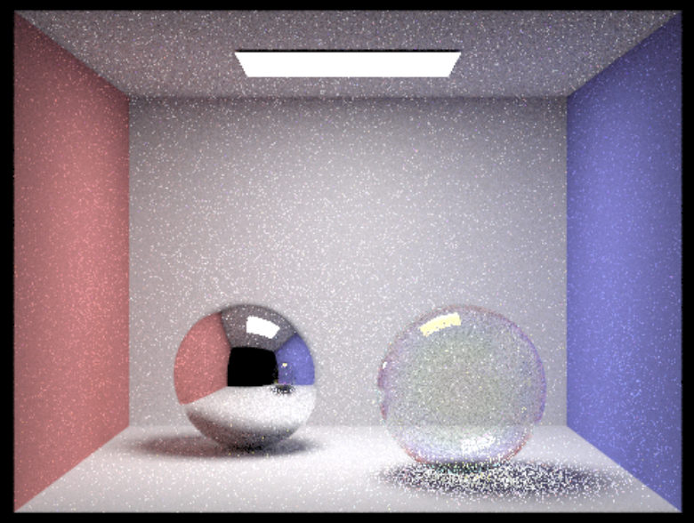

We want to build on our pathtracer to model light interactions with thin film surfaces. The ultimate goal is to support rendering of iridescent objects.
So far we are fairly on track with our original timeline presented in our project proposal including:
- Reading research papers to understand light, thinfilm, how they interact, and how to estimate the interference that leads to the rainbow effect
- Altering .dae files such as CBspheres.dae and CBbunny.dae from project 3 to include thin film materials and effects
- Updating the collada file from project 3 to be able to parse our new thin film effects in our XML files
- Created a new BSDF type called ThinfilmBSDF with sample_f functions as well as a helper function to calculate the intensity for reflected and transmitted light based on the estimated interference patterns for red, green and blue wavelengths
https://docs.google.com/presentation/d/1YUe6vGgCdSVZ54A408AU4jitNQCmUJ7t4mXTvj88k-4/edit#slide=id.p
We are mostly on track with our original plan and slightly ahead of schedule. We’ve finished a basic implementation and are able to render images that are somewhat close to our final goal. For example, here is an image of a hollow, transparent, thin film sphere (essentially a soap bubble):
|  |
It is showing the rainbow effect near the edges and looks relatively realistic. Another goal we have is to vary the thickness of the bubble vertically to achieve a more realistic look. We would also like to support rendering of solid objects like the dragon or bunny with a thin film over top. This will require alterations for more .dae files and possibly refinements to our code.
- By 5/1: Implement varying thickness of the soap bubble
- By 5/1: Figure out why there are shadows underneath our transparent bubbles
- By 5/3: Continue creating more thin film .dae files to render
- Start writing final report and preparing presentation this week and update it as we go along